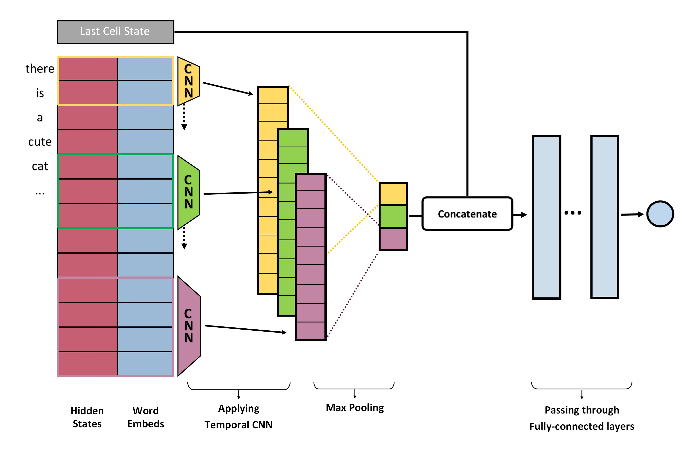

Predicting the Quality of Machine Translation
This post summarizes part of the work I did during my study away at NYU at 2017. I was guided by Tian Wang and Prof. Kyunghyun Cho.

Introduction
Deep neural network has shown surprising overall performance on many tasks. However, deep neural network is not perfect. A good model still makes wrong or even absurd mistakes on some predictions and trusting the model blindly can lead to catastrophic results, such as the tragical accident of the first Tesla auto-driving car collision. Therefore, effort has been made to predict the quality of a model’s predictions so a user knows when to trust the model and when to intervene.
In this post, we explore the task of predicting the quality of Neural Machine Translation. It is important because neural machine translator has been used more and more frequently but the users themselves often cannot assess the translation quality. For example, a traveler may be translating a sentence into a language that he does not speak. Conventional methods use Model Confidence as an indicator of the translation quality, such as the probability scores (softmax scores) of the translations or the variance in the probability scores in Bayesian method.
We propose a novel Meta-Predictor network that directly learns to predict the translation quality. For a trained translator, we propose a method to estimate its translation quality based on its perplexity on the ground-truth translations. The Meta-Predictor, adapted the CNN structure in [1], takes the states of the translator’s encoder as input and tries to regress the quality. There are several advantages of our method:
- The Meta-Predictor has better performance than the Model Confidence based methods.
- The Meta-Predictor can correct some of the bias in the translator. If some source sentences have the patterns that trigger the translator to give confident but absurd results, Meta-Predictor can detect them.
- The Meta-Predictor can be constructed for any pretrained translators without the need to retrain them.
- The Meta-Predictor only requires finishing the translator’s encoding step. As the decoding step is often more computation-costly than encoding, a user can opt to not decode if the translation is predicted to be bad.
In the following sections, I will first introduce the conventional Neural Machine Translator and Model Confidence methods. I will then introduce the Meta-Predictor and show the experimental results in the end.
Neural Machine Translation and Model Confidence
 |
The task of Neural Machine Translation (NMT) is to translate a sentence from a source language (source sentence) to a sentence in a target language (target sentence). In this section, I will briefly introduce the standard translator and Bayesian translator and how to compute their confidence of translations.
A Standard Translator has two components, a Encoder $f$ and a Decoder $g$. $f$ usually includes a word embedding function and several stacked LSTM layers. It receives one word of the source sentence at each timestep and encodes it to a hidden state. The last timestep’s cell state of LSTM is often considered as an overall summarization of the source sentence. $g$ also has a word mapping function and LSTM layers. In addition, it has a softmax layer and often an attention unit. It receives the encoder’s hidden and cell states and decodes out one word at each timestep. The attention unit computes which part of the source sentence to attend to for each timestep and the softmax layer computes a probability distribution over the vocabulary of target language. Fig.2 shows a general translator structure without attention unit.
Given a pair of source and target sentences $(X, Y)$. $X$ and $Y$ represents sets of words: . At one encoding timestep $i$, the output of $f$ is
where $h_i$ and $c_i$ denote the hidden state and cell state of LSTM. At a decoding timestep $j$, $g$ predicts .
In inference, the model generates a translation of the source sentence, $\hat Y$, and we have
can be treated as a direct indicator of the model’s confidence.
A Bayesian Translator employs Variational Dropout proposed in [2]. It can be easily constructed by (1) replacing the standard dropout between LSTM layers with Variational Dropout; (2) adding a special dropout to the word embedding function. I will not go into much detail here. In short, the Variational Dropout uses the same dropout mask at all timesteps and the dropout of the word embedding function randomly sets a word embedding vector to $0$. Different dropout masks represent different sets of weights sampled from the weight distribution.
In inference, the bayesian translator runs several forward passes with dropout enabled to obtain a set . Thus the variance can be computed on the set. The larger the variance, the less certain the model is about its translation. Therefore, is also an indicator of the model confidence.
It should be noticed that, computing both and $-V[P(\hat Y|X)]$ requires to finish the decoding step. As decoding usually involves beam search, it can be very slow. In the next section, we introduce a Meta-Predictor network which can predict the translation quality relying only on the outputs of encoding and has better performance than and $-V[P(\hat Y|X)]$.
Meta-Predictor
We aim to constructing a Meta-Predictor for a trained Neural Machine Translator $(f,g)$. Given a pair of source sentence and target sentence $(X, Y)$, the Meta-Predictor should be able to predict the quality of the translation $\hat Y$ only based on the output of the translator’s encoder, $f(X)$.
To achieve this goal, we need a dataset of tuples of $(X, Y, q)$. $q$ denotes the quality of the translator’s translation of $X$. Then the Meta-Predictor is trained on this dataset, learning to regress $q$ based on $f(X)$. During the training, the encoder $f$ is freezed. I will first introduce how we compute $q$ then the structure of Meta-Predictor.
Translation Quality $q$
Given a new dataset of pairs of $(X, Y)$ and a translator $(f,g)$, we estimate $q$ based on Perplexity, which is a widely used measurement of the translator’s performance. Perplexity is computed by
In information theory, it is related to, given a ground-truth word in $Y$, the number of words the translator considers as equally probable. A low perplexity means, except the ground-truth word, the translator considers few other words are correct. Therefore, a low perplexity also indicates the translation will be good. Perplexity is not bounded and has a skewed distribution in practice, making the regression unstable. Thus we compute a new indicator $q$ based on perplexity.
where $\mu_{log}$ and $\sigma_{log}$ is the mean and standard deviation of $log\left(ppl_Y\right)$. The goal of the Meta-Predictor is to estimate $q$ based on $f(X)$.
Network Structure
|  |
Given a source sentence $X$, the Meta-Predictor receives three inputs from the encoder: the word embeddings , the hidden states and the last cell states $c_{|X|}$ of LSTM in $f$.
The forward pass of the meta-predictor includes three steps:
-
generate 2,3,4-gram representations of the source sentence using temporal CNNs and Max Pooling.
-
concatenate these representations with the cell state to form the final representation.
-
pass the representation through 3 fully-connected layers to predict $\hat q$.
Step (1) : First of all, let $t_i = [h_i; e_i]$ denote the concatenation of the word embedding of the $i$-th word and the $i$-th hidden state. It represents all the information about the $i$-th word extracted by the encoder. Then . To generate a $n$-gram representation, a temporal CNN of window size $n$ is applied on $T$. That is, the output of location $i$ is
$g^n_i$ is a summarized representation of a $n$-word phrase. By applying the CNN to all locations, we can obtain a set . In the end, max pooling is applied to to obtain a final of the whole sentence.
By varying $n$, we take account of phrases of different lengths. In our setting, we choose $n$ to be 2, 3, 4.
Step (2) and Step (3): the final representation is the concatenation of $\hat g^2$, $\hat g^3$, $\hat g^4$ and the last cell state from encoder . It is then fed through 3 fully-connected layers to obtain a prediction.
In the end, the Meta-Predictor is trained by optimizing L2 loss with SGD
Experiments
Dataset and Training Procedure
We trained two translators, a standard translator and a bayesian translator and one Meta-Predictor for each translator. We used WMT15 dataset and translated from English to German. We took three corpus for training and validating: Europarl v7, Common Crawl corpus and New Commentary v10. Newstest13 was used for test. We separated the training dataset for the translators and Meta-Predictors: firstly a translator was trained on a half of the training corpus using Adam. It was then freezed and a Meta-Predictor for this translator was trained on the other half of the corpus using SGD.
For translators, we used OpenNMT-py framework and followed the data preprocess procedure and network structure described in this post. Specifically, the vocabulary sizes of both English and Germane were set to 5000 and the size of word embeddings was 500. Each Encoders and decoders had two stacked LSTM layers with hidden size equal to 500. The decoders had attention units and softmax layers in addition.
The two Meta-Predictors for the standard and bayesian translators had the same structures. Each had three temporal CNNs of window size 2,3,4 to generate $n$-gram representations. Each CNN has 500 filters. After the CNNs and MaxPooling layers, there were 3 Fully-Connected layers with hidden size equal to 1500.
In the end, on the test corpus, we collected the translations of both translators and the predictions of their Meta-Predictors. To generate translations, the decoding step uses beam search with beam size equal to 5.
Evaluation Protocol
We use Bilingual Evaluation Understudy (BLEU) score to evaluate the quality of corpus of translations. A high BLEU score means better translations. The BLEU score of the standard translator on the test corpus is 56.04. The score of the bayesian translator is 55.81.
To measure how good a indicator correlates with the translation quality, we plotted calibration curve. That is, we sort all translations $\hat Y$ descendingly by the indicator scores. We graduatelly removed the translations with the lowest scores (the sentences of bad quality) and kept measuring the corpus quality of the translations left. As more and more bad translations are removed, the quality of the sentences left is expected to increase. The calibration curve is the curve of the percentage of sentences removed and the BLEU score of corpus of the sentences left. For a reasonable indicator, the curve should be upward sloping.
$q$ and Translation Quality
Firstly we show the calibration curve of the ground-truth $q$. It can be observed that $q$ is indeed a good indicator of translation quality. It is valid to train a Meta-Predictor based on $q$.

|

|
Compare Meta-Predictor and Model Confidence
Here we compare the calibration curves of , and the Meta-Predictor, denoted by $MP$ in plots.
For the standard translator, we compare $MP$ with $P(\hat Y|X)$ . For the bayesian translator, we compare with both $P(\hat Y|X)$ and $-V[P(\hat Y|X)]$.

|

|
It can be observed that:
-
Meta-Predictor has higher accuracy in predicting the translation quality. For both translators, the curve of $MP$ is above those of $P(\hat Y|X)$ and . The Meta-Predictor’s predictions better correlate with the translation quality.
-
Both the curves of $P(\hat Y|X)$ and are downward sloping at some point. The curve of $MP$ is more consistent. It is upward sloping and only has a few negligible downward fluctuations.
-
Comparing the curve of $q$ above and the curve of $MP$, there is still a big gap. It is inevitable because the gap represents the knowledge the translator does not learn and the unpredictable mistakes. A Meta-Predictor can be as good as $q$ only if it accurately knows the ground-truth translations. In that case, it is a perfect translator itself.
Conclusion
The proposed Meta-Predictor has shown superior accuracy on predicting the quality of machine translations. It can be constructed for any translators without the need to retrain them. Moreover, it relies only on the output of translator’s encoder. It also can be fastly computed as it utilizes CNN rather RNN and can be speeded-up by parallel computing. In the end, the gap between the calibration curves of the Meta-Predictor and the ground-truth $q$ shows the possibility of future improvement.
Reference
[1] Yoon Kim: Convolutional Neural Networks for Sentence Classification